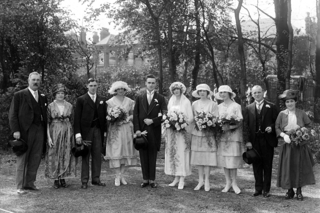

Dora & Stanley's Wedding, 1921. From the right: Dora's mother and father, her cousin Phyllis and sister Daisy. From the left: Stanley's father and mother, his brother Bob and sister Mabel.
Click HERE for fullpage display